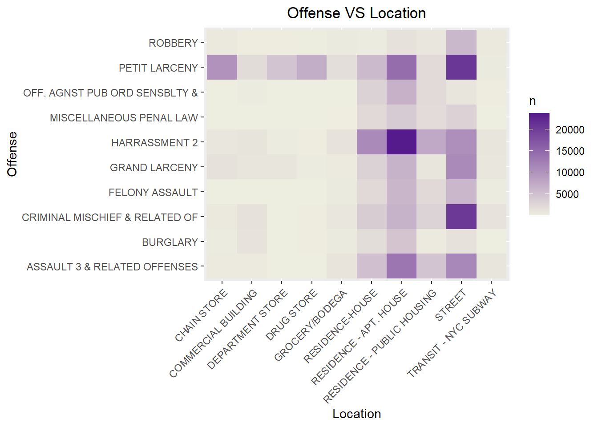
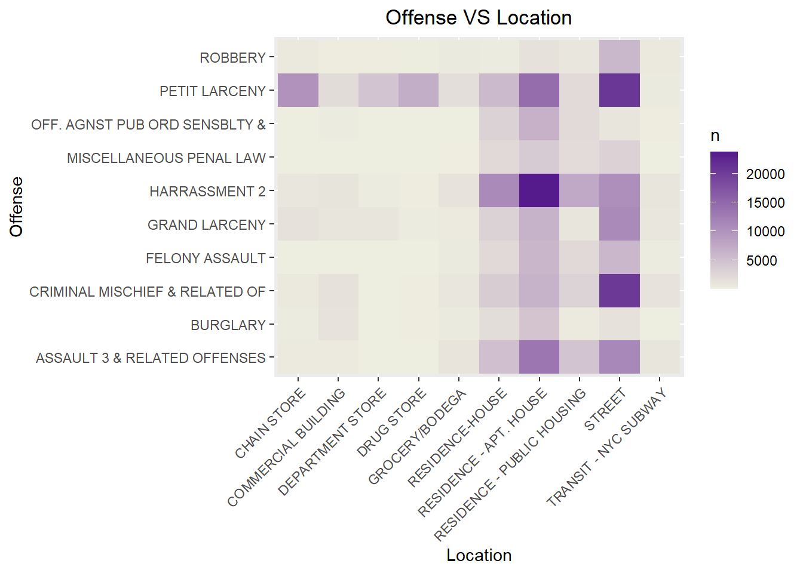

Chapter 5 Results
 - All county has lowest number of crime between 5am and 6 am
- Brooklyn has highest number of crime between 17 pm and 18pm. Brooklyn has largest number of crime in all time range.
- Manhattan has highest number of crime between 16 pm and 17 pm.
- Bronx has highest number of crime between 18 pm and 19 pm.
- Queens has highest number of crime between 18 pm and 19 pm.
- Staten Island has highest number of crime between 12pm and 13 pm. Staten Island has lowest number of crime in all time range.
- All county has lowest number of crime between 5am and 6 am
- Brooklyn has highest number of crime between 17 pm and 18pm. Brooklyn has largest number of crime in all time range.
- Manhattan has highest number of crime between 16 pm and 17 pm.
- Bronx has highest number of crime between 18 pm and 19 pm.
- Queens has highest number of crime between 18 pm and 19 pm.
- Staten Island has highest number of crime between 12pm and 13 pm. Staten Island has lowest number of crime in all time range.

Crimes have similar shape between different county except Staten Island. We can see that misdemeanor level of crimes is the largest among three levels, felony,misdemeanor,violation.

In Brooklyn, Manhattan, Bronx and Queens,Brooklyn have the largest number of crimes in all level. Manhattan have lowest violation crimes. Bronx seems to have similar distribution of crimes as that of queens

 
